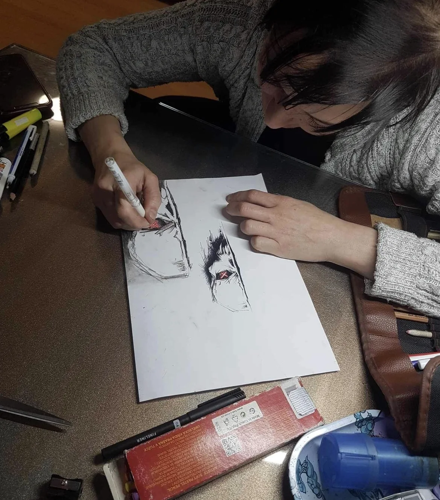
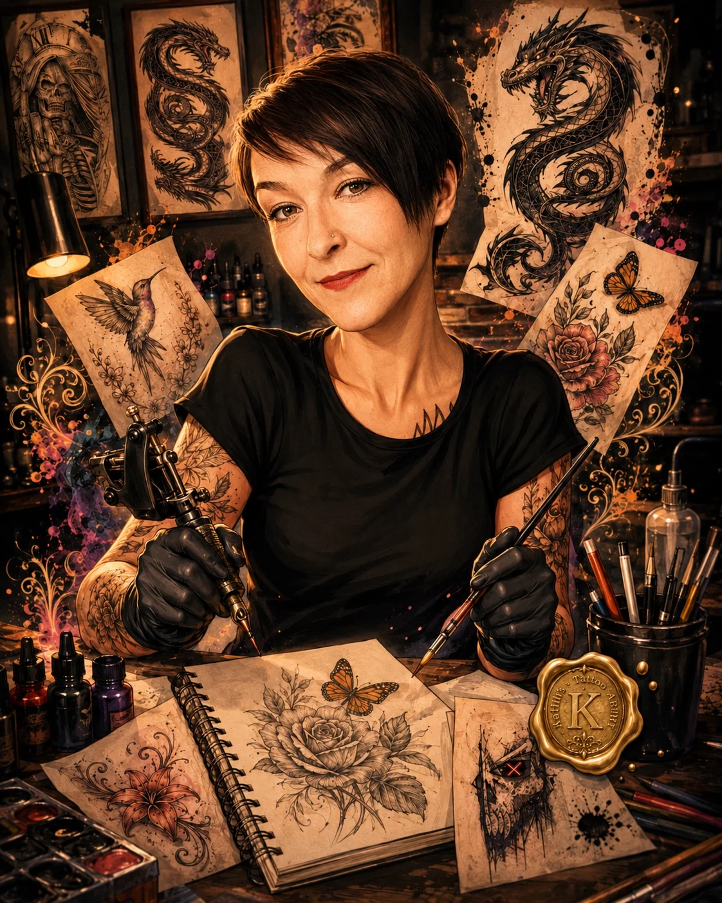

Malerei · Zeichnung · freie Arbeiten
Beyond
Ink
Kunst endet nicht auf der Haut.
Ein persönlicher Blick auf Malerei, Zeichnungen, Studien und freie Arbeiten – jenseits der Nadel, aber aus derselben kreativen Handschrift.
Featured Works
Malerei
Farbe, Struktur und freie Komposition erzählen Geschichten jenseits klarer Konturen. Jede Arbeit trägt ihre eigene Stimmung, Bewegung und Bildsprache.
Works on Paper
Ausgewählte Zeichnungen
Illustrationen und Motive auf Papier – von klarer Linie bis zu dichter Schattierung, mit bewusst unterschiedlichen Formaten und Charakteren.
Studio Archive
Skizzen & Studien
Studien, Experimente und Arbeiten, die den Weg zwischen einer ersten Idee und einer ausgearbeiteten Bildsprache sichtbar machen.

Im Entstehen
Eine Idee beginnt mit einer Linie.
Zwischen Skizze, Material und spontaner Entscheidung entsteht die Richtung oft erst während der Arbeit. Dieser Prozess gehört für mich genauso zum Werk wie das fertige Ergebnis.

Beyond Ink
„Malerei, Zeichnung und Tattoo sind für mich keine getrennten Welten. Es sind unterschiedliche Flächen für dieselbe Neugier.“